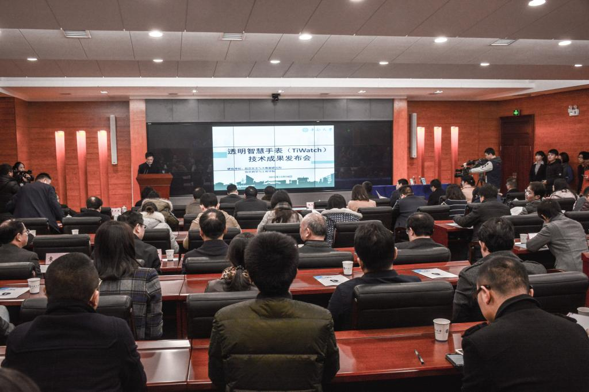
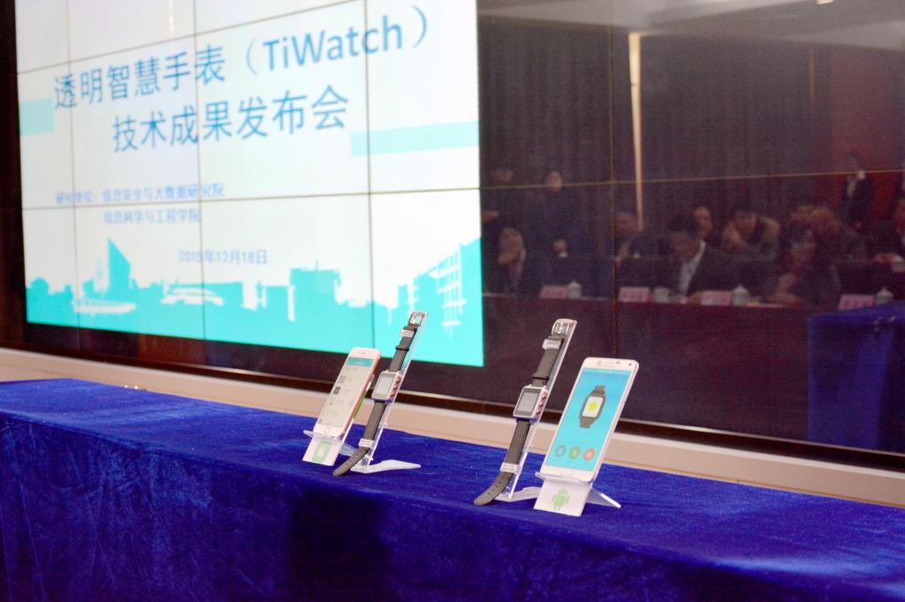

发布时间：2015-12-18来源：大学生通讯社
本网讯：两款看似普通的黑色男式手表分别连接苹果和安卓手机展示在会场前台，现场镁光灯闪烁，许多媒体记者和电子产品爱好者争相拍照并向科研团队成员询问细节。一款由中南大学自主研发的透明智慧手表正式进入大众视线。12月18日，中南大学自主研发的透明智慧手表技术成果发布会在科教楼一会议室举行。
 信息安全与大数据研究院院长李建彬教授就新研发成功的透明智慧手表（TiWatch）的核心技术、功能特点、应用前景等做了介绍和阐释。透明智慧手表（TiWatch）是基于透明计算模式开发的新型智能手表。Tiwatch采用透明计算模式设计，同时具有待机时间长、功能扩展性强和安全性高等特点，并支持苹果iOS和Android等主流手机。TiWatch为应用程序提供安全模式和缓存模式两种运行模式。在移动支付、银行U盾口令获取等安全性要求高的场景中，TiWatch要和智能手机配合才能完成认证，避免了手表或者手机丢失带来的安全问题；对于时间显示、运动监测、温度提醒、楼层高度提醒等大众软件，软件和数据则可被暂时存储在TiWatch的缓存空间中，允许TiWatch离开手机也能使用，契合了用户在运动时或者飞机上的使用场景。TiWatch还为开发者提供了丰富的开发接口定制属于自己的软件服务，比如学生可以开发自己专属的课程表、极客们也可以根据自己的照片开发头像表盘等。
根据湖南省计量检测研究院的检测报告，Tiwatch待机状态下的续航能力超过20天，正常使用时间超过7天。根据教育部科技查新网站查新结果显示，目前尚未发现有同类产品待机时间超过Tiwatch且同时具有高扩展性和高安全性。该项目已申请了15项技术成果专利，正在申请一项美国专利。研发团队正在努力将其核心成果应用到其他智能可穿戴设备上，如医疗健康透明智能终端产品等。
湖南省知识产权局、湖南省经信委、长沙市科技局、岳麓科技产业园、长沙高新区创业服务中心、岳麓科技产业园等政府单位，中国联通湖南省分公司、中国联通长沙分公司、天机无限信息技术有限公司等3家企业单位，人民日报、中央电视台、新华社等22家媒体代表，校长张尧学、副校长周科朝、党委副书记高山，学校相关职能部门和二级学院、附属医院负责人参加了发布会。发布会由周科朝副校长主持。